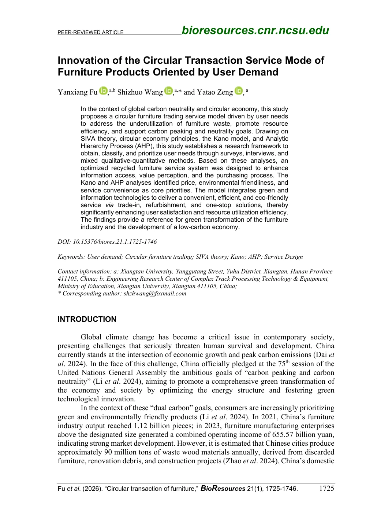

Paper 01 / SCI
循环家具交易服务模式创新
Innovation of the Circular Transaction Service Mode of Furniture Products Oriented by User Demand
Fu Y, Wang S*（通讯作者）, Zeng Y. BioResources, 2026, 21(1): 1725-1746. DOI: 10.15376/biores.21.1.1725-1746
1 研究命题 / Research Proposition

论文面向循环家具交易中的信息透明机制、质量信任机制和履约流程衔接问题，基于用户需求识别、需求分类、权重计算和可用性评价，构建面向二手家具循环交易的产品服务系统。
- 以 SIVA 框架获取用户对价值、信息、便利与服务的需求。
- 通过 Kano 和 AHP 区分需求类型并计算优先级。
- 以服务蓝图、APP原型和SUS评价验证系统可用性。
2 核心数据与量化分析 / Key Metrics
支撑用户需求分类分析。
表明问卷具有较高内部一致性。
用于需求权重判断与结构校准。
说明原型具备较高可用性。
3 研究设计 / Research Design
用户需求获取SIVA需求提取Kano需求分类Better-Worse分析AHP权重排序PSS构建服务蓝图与APP原型SUS验证
4 研究方法 / Research Methods
A. Kano需求分类
识别基础型、期望型和魅力型需求，明确循环家具系统首先需要处理的信息透明与交易信任问题。
B. AHP需求权重
通过专家判断计算需求优先级，使服务系统设计具备可排序的功能依据。
C. 产品服务系统关系
围绕出售用户、购买用户、平台估值检测、翻新仓储物流和售后追踪构建服务关系。
D. 服务蓝图与原型
将需求结果转化为平台功能、服务触点和交互流程，形成可评价的APP原型。
5 研究发现 / Key Findings
需求优先级结论：信息透明、交易信任、履约便利和服务保障构成用户优先关注需求。
系统结构结论：平台估值检测、质量评价、回收翻新、预约配送和订单追踪构成核心服务触点。
验证结论：APP原型在SUS评价中获得较高接受度，说明系统方案具备较好可用性。
6 设计转译 / Design Translation
信息透明 → 商品档案与状态可视化交易信任 → 质检评价与担保机制流程衔接 → 预约、回收、翻新、配送流程组织服务保障 → 平台交互、订单管理与售后支持